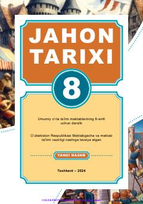

8J8-sinf o'quvchilari uchun XIII–XV asrlar jahon tarixi bo'yicha darslik.
Mazkur darslik umumiy o‘rta ta’lim maktablarining 8-sinfi uchun mo‘ljallangan bo‘lib, XIII–XV asrlardagi jahon xalqlarining siyosiy, ijtimoiy, iqtisodiy va madaniy hayotidagi muhim voqea-hodisalarni yoritadi. Unda Yevropa, Osiyo, Amerika va Afrika mamlakatlarining o‘rta asrlarning so‘nggi davridagi taraqqiyot bosqichlari haqida ma'lumot beriladi.